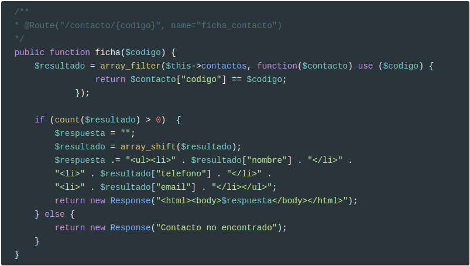
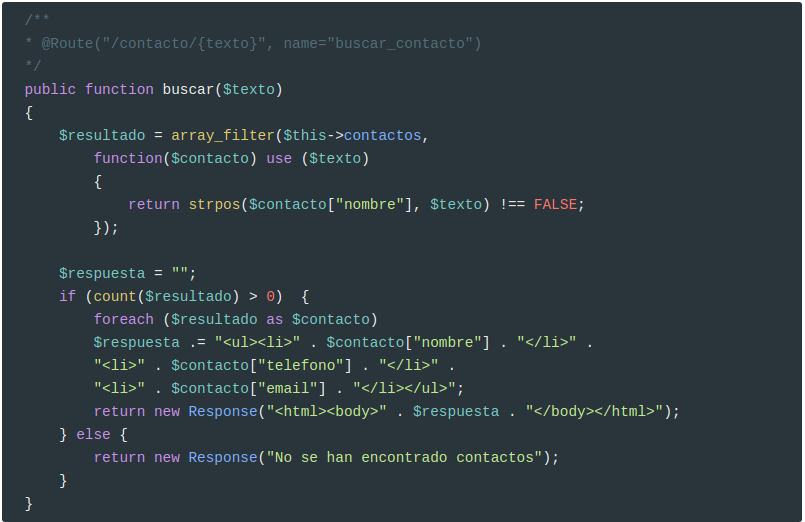
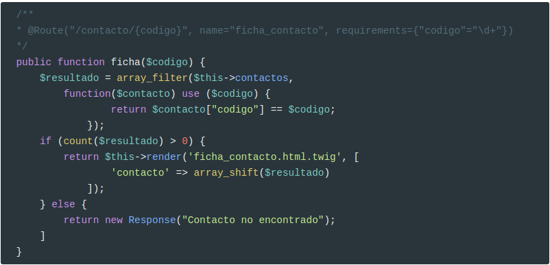
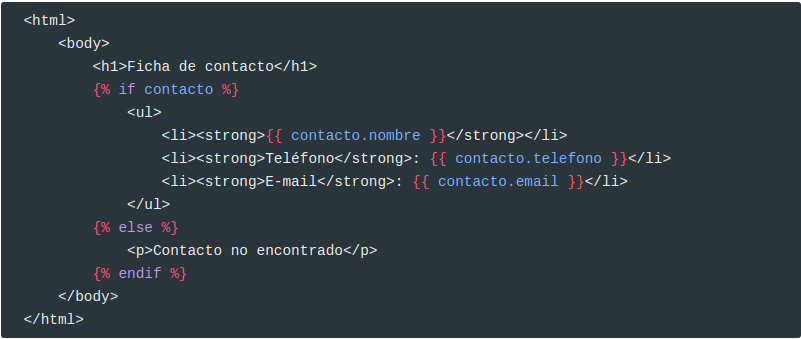
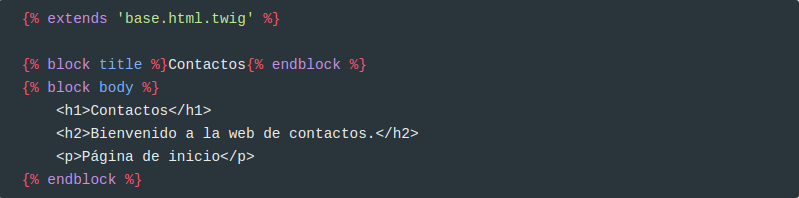
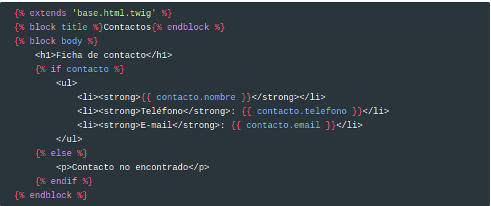
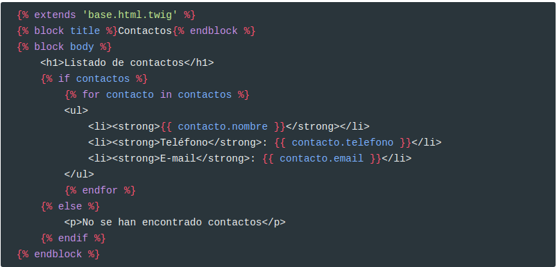
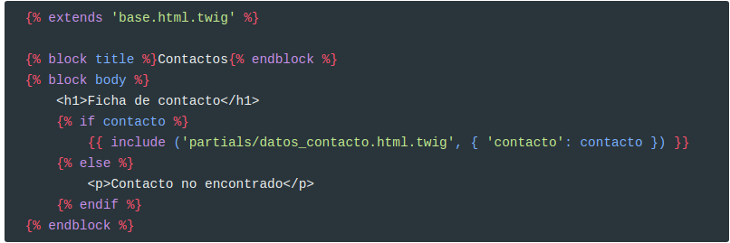
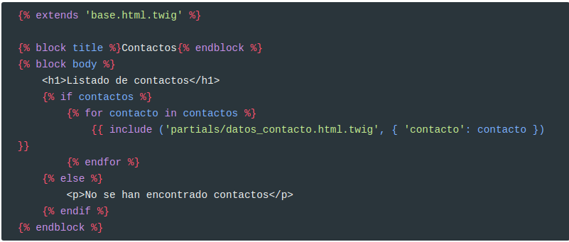

Crear un proyecto
Para crear un proyecto, se utiliza el comando
composer create-project symfony/skeleton nombre-proyecto
Que creará un proyecto con el nombre indicado en la carpeta actual, conteniendo la estructura mínima, sin librerías de terceros. Será nuestra responsabilidad añadirlas más tarde. Esta funcionalidad ha sido añadida en la versión 4 de Symfony, para permitir que se instale como microframework y no dejar un proyecto demasiado pesado para nuestras necesidades.
xxxxxxxxxxcomposer create-project symfony/website-skeleton nombre-proyecto
Que hace lo mismo que la opción anterior, pero rellena el proyecto con una serie de dependencias ya instaladas de serie. Esta opción se deja por comodidad, y por motivos de "tradición", para que los desarrolladores que venían utilizando Symfony en sus versiones anteriores no aprecien cambios significativos al crear proyectos con las dependencias habituales ya instaladas. En versiones anteriores, se instalaba lo que se conocía como Symfony Standard Edition, que era una versión mucho más extensa, con varias dependencias preinstaladas. Suele ser bastante habitual emplear esta segunda opción para crear proyectos, ya que, aunque nos instala dependencias que puede que no lleguemos a utilizar, sí nos instala automáticamente otras muy requeridas, como el motor de plantillas Twig, el ORM Doctrine, o el gestor de logs Monolog. Para empezar, vamos a crear un proyecto llamado "contactos" con la segunda opción. Accedemos a la carpeta de trabajo, y escribimos este comando desde dentro de esa carpeta:
xxxxxxxxxxcomposer create-project symfony/website-skeleton contactos
Si no están instaladas, instalamos las siguientes dependencias
Para poder realizar comandos desde la consola:
xxxxxxxxxxcomposer require annotationscomposer require symfony/maker-bundle --dev
Crear .htaccess
xxxxxxxxxxcomposer req symfony/apache-pack
Como este es un paquete contribuido por la comunidad, nos hace una serie de preguntas. Si queremos podemos configurar Symfony de la siguiente forma:
xxxxxxxxxxcomposer config extra.symfony.allow-contrib true
Inicio
Vamos a crear nuestro primer controlador.
xxxxxxxxxxphp bin/console make:controller PageController
Este comando genera un controlador PageController en la carpeta src/Controller
En este controlador, crea una ruta para / llamada inicio con el siguiente código:
xxxxxxxxxxreturn new Response("Bienvenido a la web de contactos");Ficha
Crea otro controlador llamado ContactoController:
x<?phpnamespace App\Controller;use Symfony\Component\HttpFoundation\Response;use Symfony\Component\Routing\Annotation\Route;use Symfony\Bundle\FrameworkBundle\Controller\AbstractController;class ContactoController extends AbstractController{ /** * @Route("/contacto/{codigo}", name="ficha_contacto") */ public function ficha($codigo) { return new Response("Datos de contacto con código $codigo"); } }?>Como todavía no vamos a conectarnos a un base de datos, vamos a usar un array asociativo para almacenar una serie de contactos:
xxxxxxxxxxclass ContactoController extends AbstractController{ private $contactos = [ ["codigo" => 1, "nombre" => "Juan Pérez", "telefono" => "524142432", "email" => "juanp@ieselcaminas.org"], ["codigo" => 2, "nombre" => "Ana López", "telefono" => "58958448", "email" => "anita@ieselcaminas.org"], ["codigo" => 3, "nombre" => "Mario Montero", "telefono" => "5326824", "email" => "mario.mont@ieselcaminas.org"], ["codigo" => 4, "nombre" => "Laura Martínez", "telefono" => "42898966", "email" => "lm2000@ieselcaminas.org"], ["codigo" => 5, "nombre" => "Nora Jover", "telefono" => "54565859", "email" => "norajover@ieselcaminas.org"] ]; Y modificamos el controlador:

Buscar
Vamos a crear una ruta para buscar contactos:

Si intentamos lanzar la URL anterior (http://127.0.0.1:8080/contacto/Ma), obtendremos como resultado “Contacto no encontrado”, que es el mensaje correspondiente al controlador anterior (la ficha de contacto) cuando no se encontraba el contacto con el código indicado. Es decir, se ha lanzado el controlador equivocado, y el motivo es simple: hemos definido dos rutas a priori diferentes:
/contacto/{codigo}para la ficha del contacto/contacto/{texto}para buscar contactos por nombre
Sin embargo, a efectos prácticos, ambas rutas son lo mismo: el prefijo /contacto seguido de lo que sea. En esta situación, Symfony lanza el primero de los controladores cuya ruta coincida con la indicada (el de la ficha de contacto, en este caso).
Para diferenciar ambas rutas, necesitamos un criterio, y en este caso, el criterio será que la ficha del contacto necesita que el parámetro codigo sea numérico. Esto se especifica mediante la propiedad requirements y una expresión regular, al definir la ruta de la ficha:
xxxxxxxxxx/*** @Route("/contacto/{codigo}", name="ficha_contacto", requirements={"codigo"="\d+"})*/public function ficha($codigo)Desde Symfony 4.1, también se puede emplear esta otra notación más abreviada para incluir el requerimiento en el wildcard:
xxxxxxxxxx/*** @Route("/contacto/{codigo<\d+>}", name="ficha_contacto")*/Añadir valores predeterminados
En algunas ocasiones, también nos puede interesar dar un valor por defecto a una wildcard para que, si en la ruta no se especifica nada, tenga dicho valor por defecto. Esto se consigue asignando un valor por defecto al parámetro asociado en el controlador. En el caso de la ficha del contacto anterior, si quisiéramos que cuando se introduzca la ruta /contacto (sin código), se mostrara por defecto el contacto con código 1, haríamos esto:
xxxxxxxxxx/*** @Route("/contacto/{codigo}", name="ficha_contacto", requirements={"codigo"="\d+"})*/public function ficha($codigo = 1)aunque desde Symfony 4.1 también se puede especificar en la propia anotación, de esta otra forma:
xxxxxxxxxx/*** @Route("/contacto/{codigo<\d+>?1}", name="ficha_contacto")*/Plantillas
Vamos a crear nuestra primera plantilla, inicio.html.twig en la carpeta templates.
xxxxxxxxxx<html> <body> <h1>Contactos</h1> <h2>Bienvenido a la web de contactos.</h2> <p>Página de inicio</p> </body></html>y modificamos también el método inicio para que, en lugar de mostrar una respuesta de texto plano, renderice la vista inicio.html.twig que acabamos de hacer. Para ello, el código será el siguiente:

Observa que se utiliza $this. Esto es así porque el controlado hereda de AbstractController y este es uno de los métodos que posee.
Plantillas con partes variables
La plantilla anterior no es algo demasiado habitual, ya que únicamente contiene texto estático. Lo normal es que haya alguna parte que varíe, y que le sea proporcionada desde el controlador.
Para ello creamos ficha_contacto.html.twig con el siguiente contenido:

Empleamos la notación de la doble llave {{ ... }} para ubicar variables, que normalmente son datos que esperamos recibir de fuera (del controlador, en este caso). Nos faltaría, en el método ficha de ContactoController, obtener el contacto deseado (eso ya lo tenemos hecho) y pasárselo a la vista, de este modo:

Estructuras de control en plantillas
La plantilla anterior es un ejemplo para añadir partes dinámicas en el contenido de la misma, pero está algo coja: ¿qué pasa si no encontramos el contacto en la lista? En este caso, el controlador se limita a devolver una respuesta de texto plano que dice "Contacto no encontrado", pero podríamos emplear la misma vista (u otra) para mostrar esta información más decorada. Así, el controlador renderizará la misma vista, pasándole un contacto válido o nulo, según el caso:

y la vista distinguirá si hay o no contacto, para mostrar una u otra información:

Observa cómo hemos incluido un bloque {% ... %}, que son bloques de acción, empleados para definir ciertas sentencias de control (condiciones, bucles) e incluir dentro el código asociado a dicha sentencia.
Del mismo modo, para el controlador de búsqueda de contactos por nombre, podemos crear una nueva vista (por ejemplo, lista_contactos.html.twig), que muestre el listado de contactos que reciba ya filtrado del controlador:

Así, el código del controlador se limitará a filtrar los contactos y pasárselos a la vista:

Herencia de plantillas
La herencia de plantillas nos permite reaprovechar el código de unas en otras. En realidad, esto es algo muy habitual en el diseño web: que todas las páginas (o varias) de una web compartan la misma cabecera y pie, por ejemplo. Así, podemos definir una estructura o layout base en una plantilla, y hacer que otra(s) hereden de ella para rellenar ciertos huecos. Veamos un ejemplo con nuestra web de contactos.
En primer lugar, definiremos la plantilla base. Tenéis un ejemplo en que basaros ya hecho, en el archivo templates/base.html.twig, que proporciona un esqueleto que podríamos aprovechar para muchas aplicaciones:
xxxxxxxxxx<!DOCTYPE html><html> <head> <meta charset="UTF-8"> <meta name="viewport" content="width=device-width, initial-scale=1"> <title>{% block title %}Welcome!{% endblock %}</title> {% block stylesheets %} {% endblock %} </head> <body> {% block body %}{% endblock %} {% block javascripts %}{% endblock %} </body></html>Como podemos observar, la parte rellenable de la plantilla se define mediante bloques (blocks), de forma que en las diferentes subplantillas podemos indicar qué bloques de la plantilla padre queremos rellenar. Por ejemplo, vamos a definir una subplantilla para la página de inicio. Retocamos nuestra plantilla inicio.html.twig y la dejamos así:

Es importante que, si una plantilla hereda de otra, el primer código que haya en esa plantilla (sin contar comentarios previos) sea una instrucción {% extends ... %} para indicar que es una herencia. Después, basta con rellenar los bloques cuyo contenido queramos modificar o establecer: en este ejemplo, los bloques title y body, definidos en la plantilla base.
Del mismo modo, definiríamos la plantilla ficha_contacto.html.twig

Y lista_contactos.html.twig:

Incluir plantillas dentro de otras
Otra opción interesante, aparte de la herencia, es la de poder incluir una plantilla como parte del contenido de otra. Basta con utilizar la instrucción include, seguida del nombre de la plantilla y, si los necesita, sus parámetros asociados. Por ejemplo, podríamos sacar la lista de datos de un contacto a una plantilla llamada partials/datos_contacto.html.twig:
xxxxxxxxxx<ul> <li><strong>{{ contacto.nombre }}</strong></li> <li><strong>Teléfono</strong>: {{ contacto.telefono }}</li> <li><strong>E-mail</strong>: {{ contacto.email }}</li></ul>E incluirla tanto en ficha_contacto.html.twig

Como en lista_contactos.html.twig:

Añadir contenido estático en plantillas
Para ilustrar cómo añadir contenido estático en plantillas, vamos a definir en nuestra carpeta public de la web de contactos una subcarpeta css, y dentro un archivo estilos.css (que quedará, por tanto, en public/css/estilos.css). Definimos dentro un estilo básico para probar. Por ejemplo:
xxxxxxxxxxbody{ background-color: #99ccff;}h1{ border-bottom: 1px solid black;}Ahora, vamos a añadir este estilo a nuestra web. Como tenemos un bloque stylesheets en nuestra plantilla base.html.twig, podemos aprovecharlo e incluir el CSS dentro de dicho bloque, para que lo utilicen todas las subplantillas:
xxxxxxxxxx<!DOCTYPE html><html> <head> <meta charset="UTF-8"> <meta name="viewport" content="width=device-width, initial-scale=1"> <title>{% block title %}Welcome!{% endblock %}</title> {% block stylesheets %} <link href="{{ asset('css/estilos.css') }}" rel="stylesheet" /> {% endblock %} </head> <body> {% block body %}{% endblock %} {% block javascripts %}{% endblock %} </body></html>Tenéis más información sobre plantillas en el aparatado correspondiente del aula virtual.